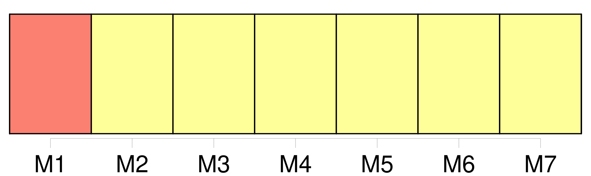
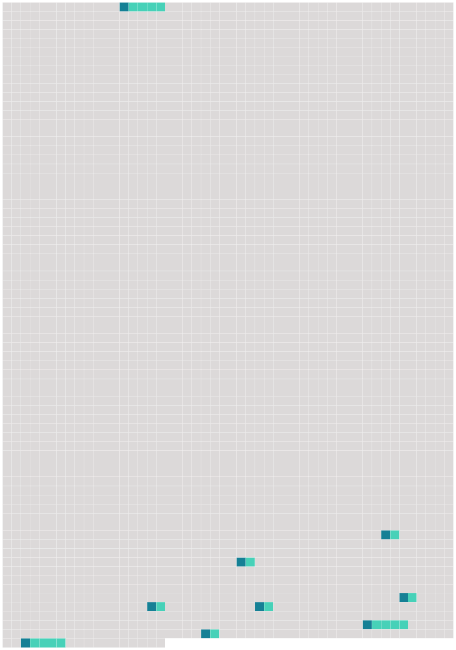

Longueur nb maillons : 9 mentions |
 |
[ article ] [163 phrases]
Il devra aussi, en association avec un ingénieur de la ville, examiner la solidité d'un mur porteur pour savoir si [le bâtiment] présente un danger pour les usagers de la voie publique. [4 phrases]
Les pompiers ont mis en action leur matériel, les différents habitants de [l'immeuble] se succédant dans la nacelle de la grande échelle du centre de secours principal. [11 phrases]
» Dès 8 heures du matin, une fois les premiers déblais terminés, un agent de sécurité a gardé [l'immeuble]
Il n'a quitté son poste qu'une fois [la maison] bien fermée. [4 phrases] Dans [l'ancienne maison de maître] , les dégâts sont très importants. [1 phrases]
Par ailleurs, plusieurs voitures, qui étaient garées dans la rue, devant [le bâtiment] , ont été endommagées par les chutes de pierres et de tuiles.
L'explosion s'est produite, vers 4 heures du matin, mardi, dans [une ancienne maison de maître] abritant six appartements au 13 rue du Tramway à Belfort. |
 |
Il est possible de télécharger la ressource sur la page Ortolang |
Si vous avez des questions ou vous voyez des erreurs, merci d'envoyer un mail à silvia.federzoni89@gmail.com |